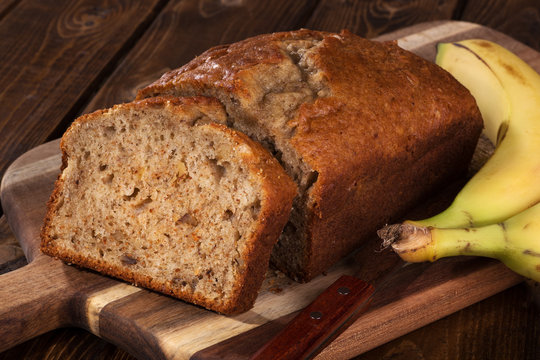

Home
Banana Bread

Description
Banana Bread following "The Cookhill Family Recipe Book"
Ingredients
- 1/3 cup of softened butter
- 2/3 cup of sugar
- 1 and 3/4 cup of flour
- 1 tablespoon of cinnamon
- 1/4 tablespoon of baking soda
- 1 and 1/2 tablespoon of baking powder
- 1 egg
- 3 very ripe bananas
- (Optional) Chopped nuts and chocolate
Instructions
- In a large bowl, mix the butter and sugar until creamy and light
- Once done, add in the egg and beat the mixture until consistent
- In a second bowl, sift flour, baking powder, baking soda, and cinnamon together
- In a third bowl, mash bananas to desired texture
- Add 1/3 of the flour mixture into the butter bowl, then beat the two together; then add in 1/3 of the mashed bananas in beat them together
- Continue adding flour mixture and bananas by thirds and beating them in the butter bowl until thoroughly blended
- (Optional) Mix in nuts and chocolate as desired
- Spread the batter evenly into a sizeable well-greased pan and bake for one hour at 350 °F (180 °C)